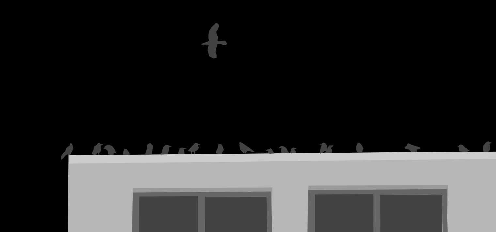

Hook
The Agents are called to meet at Sea-Tac airport. Airport Security flags each agent and pulls them aside into a small conference room. Inside the conference room is the handler.
A delta green friendly, Dr. Parsons was killed yesterday in his laboratory at the University of Oregon. His research was primarily into birds. The handler takes out a thumbdrive and plugs it into a nearby TV screen. He then plays a CCTV footage video. The video is as described below.
- Scene opens. The camera is aimed at a large tree in the center of an open courtyard. Various crows and other birds are nesting and squawking inside of the tree.
- A tall, pale, elderly male sprints into the courtyard, holding sort sort of vial in his hands. All of the crows go silent.
- The crows descend upon the man, ripping at his eyes and other body parts until he collapses.
The Handler will then access a nearby printer to print out fake school ID’s for the agents. Each agent is traveling under the guise of being a visiting professor from another university. Agents may decide what their fake PhD is in, and their fake professor name.
Objectives
Travel to the OSU aviary. Determine Cause of death. Prevent cause of death from happening again.
The campus
The oregon state campus is huge, and people are walking around. The sun is shining, and some birds watch you from the trees.
Open carrying weapons: If the agents are open carrying weapons this cause the local campus security to intercept them. Oregon state university has a policy against bringing weapons onto campus, and they will try to get the players to leave.
The Aviary
The aviary is a large open canopy building, with large greenhouse glass windows, and a open roof. The aviary also doubles as a botanical garden. Birds squawk and chirp from above. There is a large tree in the center of the aviary.
Off to the side, marked by yellow police tape is a red stain on the floor. Nearby is a black body bag. It contains Dr Parsons.
Forensic investigation A successful forensics or search will tell the agents that he died of the birds killing him. Agents also find some broken glass, and a fait smell of gasoline on his coat. He also has the keys to his office in his coat pocket.
The birds
Squawking. Pooping. Squawking and pooping. The birds are flying around the agents, mostly paying them little mind. There is a small bird bath in the corner that some of them are splashing in.
Are the birds acting normally? A successful roll for Science or Unnatural will tell the agents that the birds appear normal. For now.

The Tree
There is a large oak tree towards the side of the aviary, which has many crows, and crow nests in the tree. The agents can feel them watching. There are about ~100-200 crows inside the aviary flying in and out of the aviary.
Shiny? If the agents pass an alertness check or a search check of the surrounding area, they will notice a shiny object near a landing in the middle of the tree.
The top of the tree
At the top of the tree is a small setup, where a batch of mushrooms is growing. Several cameras have been set up to watch the mushrooms. Agents will need to make a strength check to climb up the tree.
If agents reach the top of the tree, each bird will fall silent slowly. As the agents crest the top of the tree near the landing, the birds will stop moving, and making noises, all watching the agent.
Destroying the mushrooms: Destroying the mushrooms will cause the bird swarm to fall out of the sky, with all of them collapsing on the ground dead.
Firing a weapon: Any loud noise such as a gunshot this will trigger a police response, and likely a swat team response. Players will have 1d4 turns of notice in the form of police sirens to escape before they get swatted. The handler will be unable to prevent this kind of police response.
The truth
The mushroom entity at the top of the tree has formed a hivemind with the rest of the nearby birds. If it thinks that agents are a threat for any reason it will form a Swarm of Birds, and attack the players.
Dr Parsons Office
His office is a mess, and there is a cold cup of coffee, that has been sitting there for some time. As you walk by, you can hear some students whispering about how he died after being F*cked by a crow.
Searching the office With a successful search or bureaucracy roll, the agents can find a small locked locker near the side of the room, in which he has
- Shotgun (birdshot)
- Also detailed images of the fungal growth on the top of the tree, with size measurements, and other related things.
- Flash drive, containing research on the fungal growth in the tree, with a draft of a paper called “hallucinogenic fungal interactions in avians”.
- Fungal headphone contraption_ Small strange headphones with a glass cap around each ear, with some sort of fungus in the ear caps.
- These allow for you to “hear” animals. However they require a luck roll, otherwise you hear gibberish.